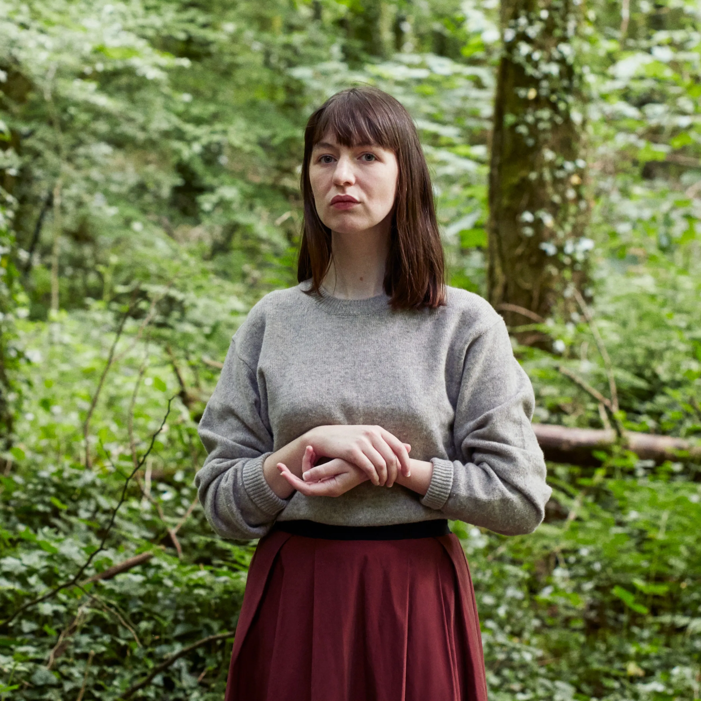

At school Connell and Marianne pretend not to know each other. He's popular and well-adjusted, star of the school soccer team while she is lonely, proud, and intensely private. But when Connell comes to pick his mother up from her housekeeping job at Marianne's house, a strange and indelible connection grows between the two teenagers - one they are determined to conceal. A year later, they're both studying at Trinity College in Dublin. Marianne has found her feet in a new social world while Connell hangs at the sidelines, shy and uncertain. Throughout their years in college, Marianne and Connell circle one another, straying toward other people and possibilities but always magnetically, irresistibly drawn back together. Then, as she veers into self-destruction and he begins to search for meaning elsewhere, each must confront how far they are willing to go to save the other. Sally Rooney brings her brilliant psychological acuity and perfectly spare prose to a story that explores the subtleties of class, the electricity of first love, and the complex entanglements of family and friendship. She began exploring the characters of Connell and Marianne in a short story she published in 2016. Normal People was published in 2018. The book was a best-seller in the United States and spawned a critically acclaimed and Emmy-nominated Hulu original television series. Critics have hailed Rooney as the “foremost millennial novelist.”
Sally Rooney was born in 1991 and lives in Dublin, where she graduated from Trinity College. Her work has appeared in Granta, The Dublin Review, The White Review, The Stinging Fly, and the Winter Pages anthology. She has published three novels: Conversations with Friends, Normal People, and Beautiful World, Where Are You. The first two were adapted into the television miniseries Normal People and Conversations with Friends.
 Normal People is a pas de deux between two Irish teenagers, both star students: Marianne, a loner from an affluent, abusive family, and Connell, a popular jock born to a teenage single mother, who works as a cleaning woman in Marianne's home. After a short-lived high school romance, Connell and Marianne pinball toward and away from one another through their studies at Trinity College Dublin (Rooney's alma mater), where their intense connection is disordered by misunderstandings, unkindnesses, and jockeying for a place in Trinity's fraught social hierarchy. Esquire spoke with Rooney about power imbalances, masculinity, and how to practice kindness in fiction.
Connell often looks to others to instruct him in what to do and how to be. You write, “His personality seemed rather like something external to himself, managed by the opinions of others rather than anything he individually did or produced.” Is this apathy, or is just the formlessness of being young, and finding out who you are?
Sally Rooney: I think in his case, it's a kind of anxiety. It's not wanting to do anything that might not be the normal thing to do. It's constantly having your behavior at the mercy of whatever happens to be considered normal, and then not always having a template for that. I know there's a moment early in the book where he wishes that he knew how other people's private lives went on, because he feels so at a loss in knowing how to proceed. He is definitely someone who wants to know what's considered normal, and then sometimes feels panicked when he can't figure out what that is. I do think it stems from anxiety—a desire to be perceived a certain way by others. And internalizing that anxiety, I think, much beyond the actual pressures that are placed on him in an external sense. There are peer-related pressures, but in his case, he exaggerates the degree to which those press on him for psychological reasons.
Does it hold him back?
His desire to conform? Absolutely. In the first passage of the book, it holds him back from having a healthy relationship with someone he loves or believes himself to love, and someone who really seems to love him. They can't have a healthy, equitable relationship because of Connell's immense desire to be perceived as normal by others. I think there are healthy aspects to it, but he takes it so far that it's no longer a healthy impulse. He really desires to be seen in a particular way, and he's willing to modify his behavior and do things he probably doesn't believe are right in order to maintain that perception. It holds him back from doing the right thing.
Connell goes through some traumatic experiences—there's the nonconsensual encounter with his teacher, and the suicide of his friend Rob. What struck me was how he was able to work toward a place of asking for help in those moments. He comes clean to Marianne about the teacher, and he seeks professional help about Rob. We know, statistically speaking, that many young men struggle to be transparent about their feelings. What enabled him to transcend that and seek the help he needed?
I think very specific sociocultural factors like the fact that he is a student of a university that offers a free counseling program, and a flatmate who said to him, “Look, you should avail yourself of this service, because it's free.” The fact that a male peer had said, “It's acceptable for you to do this,” and the fact that he could do it without any economic barriers. Certainly there are gendered aspects to people's ability to seek help in those situations, but there are huge socioeconomic aspects, as well. It was the fact that he found himself in a position to be able to ask for help that was the first big barrier. And then also, at that point in the book, he had moved on from the teenage conception of his identity, and was no longer, to quite the same degree, wrapped up in what other people thought of him. Perhaps because he had been broken down by circumstance. He was just so unhappy that he was no longer able to think in those terms. Also, there were the years of his very intimate relationship with Marianne, and the influence that had on him in terms of making him accept himself more. Probably all those things came together to make him more open to seeking help at that point in his life.
How did the nonconsensual encounter with his teacher change him?
Connell is a character who struggles a lot with feelings of shame. Rather than seeing himself as a victim or someone to whom bad things have happened, he sees himself as culpable to some extent, like he's done something wrong that led to something bad happening to him. It's much easier for him to narrate his life to himself in that way, so that's the narrative he reaches for. I think the likely response on his part was to feel ashamed, and to feel like he had done something bad, and that if people found out, he would be humiliated. Because of the narrative that he reached for, those were the feelings that he brought with him. The fact that Marianne is the person he reaches out to is helpful that's not the narrative she's going to reach for. She is going to immediately say that he hasn't done anything wrong and that somebody has taken advantage of him. Having that counter narrative available to him then when he does reach out to her is helpful for him in working through what happened. I think it certainly compounded deep feelings of shame that he was carrying around, feelings that made him feel fearful and anxious. When it happens, he thinks, “Of course this happened to me. It was my fault and it's an example of the kind of person I am.” It compounds all the bad feelings that he already had about himself, and reiterates the narrative of his life that makes him feel like nothing is ever going to go right.
With Connell and Marianne, there's this seesaw of power and influence that's always in flux between them. You write, “In a rush, he feels his power over her again.” How would you classify that power? Is it sexual, emotional, economic? Is it all of those things?
Definitely it is sexual and emotional. He feels that she has a loyalty to him that he doesn't necessarily have to return in order to get it. Sometimes he is loyal to her, but he doesn't have to be in order to receive her loyalty back, and I think his awareness of that makes him feel he has a huge amount of power over her. That her feelings for him are unconditional. He's proven that to himself because he treated her poorly and she came back. Once he learned that lesson, he feels this dangerous, almost heady sense of, “It doesn't matter what I do to this girl. She's so willing to be mistreated by me that it's kind of scary.” At the same time, it feeds his ego to think he's so important to her that she would do anything for him. I think those feelings are complicated for him. He's not always happy that he feels that way; he reproaches himself for fetishizing that level of power. There are certain things she asks him to do that he doesn't want to do because it feels like he's acting out the kind of power that he's afraid of in himself.
You go so far so to call his power over her “effortless tyranny,” and Connell even admits to himself that he has “cultivated” that power. With that in mind, do you think that he exercises his power over her in a responsible way?
Definitely not a lot of the time. That was an interesting thing for me to watch and process, because if I had chosen to tell the story simply from either one of their perspectives, I don't think it would have had the same interest for me. To follow it from only her perspective, at certain points I would've felt locked out from why he was behaving in such a manipulative, domineering way. Solely from his perspective, it would've been like, “Why would she put up with this?” I really needed to be with both of them to understand—to sympathize and to be there with him even when he was doing bad things, and also to be with her when she was in some cases passively allowing these bad things to be done to her. Power is a feature of human relationships. I was very interested in this character who's very young and has very limited life experience. How is he going to negotiate this sudden rush of power that he has over another person? I was interested to see how his ability to negotiate that was going to change from the time that he handles it poorly at 18 to a time to a more complex understanding by 22.
You excel at writing sex. Not just the pleasure, but reservations, the awkwardness, the emotional complications. What, for you, are the keys to writing an effective sex scene?
When I hear the phrase “sex scene,” it's interesting for me, because it's a scene, so it does what any scene should do. If you're only writing it in order to show that the characters have sex, you could just say they had sex. That's all that's being communicated. You don't need to describe anything because it can be assumed. For it to be worthy of a scene, something has to change, because scenes are not about moments of exposition—scenes are about dynamic and change. If I'm going to write a whole scene, I need to feel that there is a reason why I'm making the reader pay attention to what's happening here, because by the time it's actually finished happening, something will actually be different between these people. Sometimes it'll be an exchange of intimacy that hopefully makes the reader understand why these people find each other so compelling. It's dramatizing what is drawing them to one another on this level, and without it, it wouldn't be comprehensible as to why they spend five years circling each other. Or it can be a moment of complete disconnect, where they're not able to make that connection, and that then makes something shift in their dynamic. That's obviously another reason why we want to write the sex as a scene and not say, “After they finished having sex, they went for a walk.” That's my approach. I only write about sex when I feel it's telling us something different or new about these characters—when it's showing something actually happening to them rather than just filling you in on the fact that they have a sex life. That can be done faster!
Connell and Marianne are often unclear and unspecific on the terms of their relationship. You write of him, “He's not sure what friends are allowed to enjoy about each other.” As young people form more casual, nebulous relationships, how do you think that affect the identities they form and the connections they develop?
While rigidly defined relationships may have been more socially predominant in previous generations, it doesn't mean they reflected the material reality of how people lived. Monogamy has been a big ideal for a long time, but has it been a big reality for a long time? I'm very skeptical that societies have ever been truly monogamous. The ways that we describe and talk about our relationships have changed a huge amount, but there is a sense in which the certainty of human relationships has always been at play. Relationships are messy and often transcend the terms that we impose on them. Maybe boyfriend and girlfriend were more readily available items of vocabulary in previous generations, but did they perfectly describe the relationships they were talking about? The messy feelings and the messy activities? There's also a social sanctioning to labels—when you describe someone as your boyfriend, you're allying your social capital to this one individual, and that's something that Connell is very reluctant to do with Marianne at first because he is ashamed of her, and then later because he's intimidated by her. We all know that the ways we talk about relationships has changed immensely, and that people's relational habits have changed. People are getting married much later now, so it's true that it's not just that the terminology is different now. I also think there is more of an expectation that people will spend a lot of their early adulthood meeting different people, having different relationships, and exploring different possibilities. But my only job is to be sensitive to how things are now. I don't think it's to comment on the degree to which they shifted, or how far they've shifted. I think it's just to see them as they are and try to do justice to that in what I write.